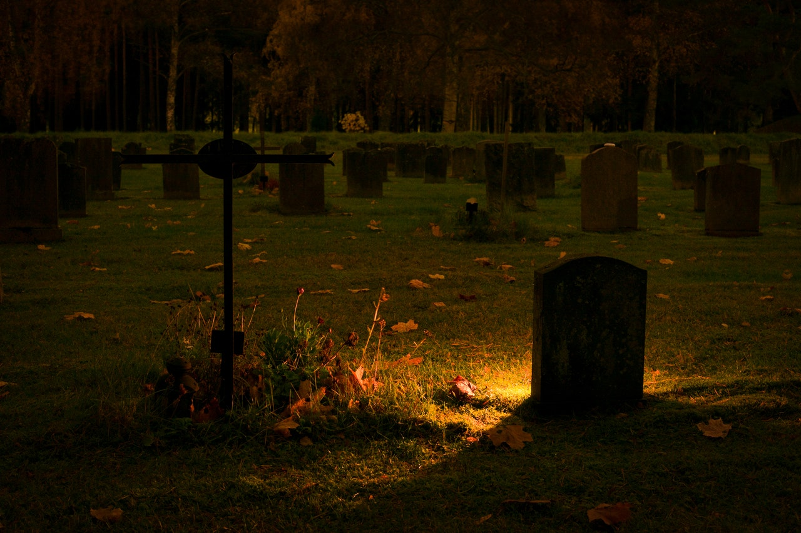

Corres con prisa hacia donde tus oídos te señalan aquellos ruidos, cuando de repente te encuentras a una extraño hombre que se planta enfrente de tí con fimreza. El hombre parece no tener rostro, ni tampoco intenciones de atacarte, de todos modos, lo esquivas para seguir con tu camino, pero repetinamente lo escuchas decir: -Malgastas tus energías. Es inútil lo que intentas.- Te detienes inmediatamente, y confundido le preguntas a lo que se refería. El hombre solo responde: -¿Acaso no lo recuerdas?-.La respuesta te deja aún más confundido que antes, pero antes de que siquiera pudieras pronunciar una sílaba, el hombre te interrumpe, y empieza a explicarte la situación.
-Verás, tú te dedicabas a cuidar de este bosque, y aquellas personas que escuchas, son tu familia...-
Al escuchar eso, inmediatamente te volteas para seguir corriendo, ahora con más ansia, sin embargo, nuevamente las puntuales alabras de aquél hombre te detienen:-Te dije que es inútil, ¿acaso no te diste cuenta de ello al ver a tu padre?-. Sientes más incertidumbre y confusión por el hecho de que aquél hombre sepa todo de tí
El hombre te explica lo que sucedió y por qué tú y tu familia están aquí. -Como ya habrás de sospechar, estás mueto, y este no es un lugar en el que deberías estar. Debes acompañarme.-
Sus respuestas solo te generan más dudas, pero el nerviosismo no te deja decir una sola palabra. Aquél hombre te dirije hacia tu funeral; sientes un coctel de negativas sensaciones en tí: Dolor, impotencia, miedo, rabia y una profunda tristeza que haría romper en llanto al más fuerte, sin embargo, no puedes llorar por más que lo intentas. Quedas todavía más anonadado al ver de frente tu muerto cuerpo, sabiendo que no tienes vida; no tienes nada...